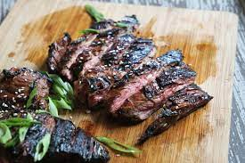

Description
Asian inspired sauce and its combination of ginger & garlic, mixed with the savory tang of French's Classic Worcestershire Sauce.
Ingredients
- 1 cup French's® Classic Worcestershire Sauce
- 1 tablespoon minced garlic
- 1 tablespoon minced fresh ginger
- 2 pounds boneless loin steaks
Instructions
- Worcestershire, garlic and ginger in deep dish. Add steak. Refrigerate 30 min. or up to 3 hours. Drain steak.
- GRILL or broil steak over high heat about 15 min. for medium rare, turning once.
- PLACE steak on serving plate; let steak rest 10 min. before slicing. Serve with additional Worcestershire on the side.